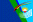

| Circuit | Date |
Winner | ||
| General Roca | 31 March | #5 - JM.Silva (Honda Civic) | ||
| Rio Cuarto | 14 April | #9 - N.Fontana (Toyota Corolla) | ||
| San Juan | 5 May | #7 - M.Bugliotti (Honda Civic) | ||
| Bahía Blanca | 26 May | #9 - N.Fontana (Toyota Corolla) | ||
|  | Resistencia | 9 June | #8 - D.Cingolani (Honda Civic) | |
| Oberá | 7 July | #9 - N.Fontana (Toyota Corolla) | ||
| Alta Gracia | 28 July | #7 - M.Bugliotti (Honda Civic) | ||
| Salta | 17 August | #5 - JM.Silva (Honda Civic) | ||
| San Juan | 1 September | #5 - JM.Silva (Honda Civic) | ||
| Paraná | 29 September | #10 - O.Martinez (Toyota Corolla) | ||
| Buenos Aires | 13 October | #40 - N.Vuyovich (Honda Civic) | ||
| San Rafael | 3 November | #6 - G.Ortelli (Honda Civic) | ||
| Pigüé | 24 November | #9 - N.Fontana (Toyota Corolla) | ||
| Mar del Plata | 15 December | #11 - G.Furlan (Mitsubishi Lancer) |